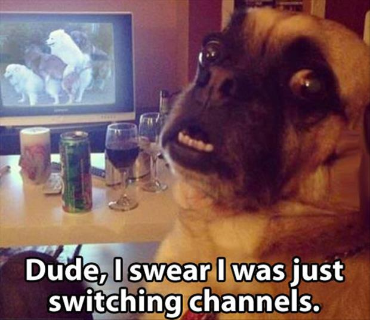
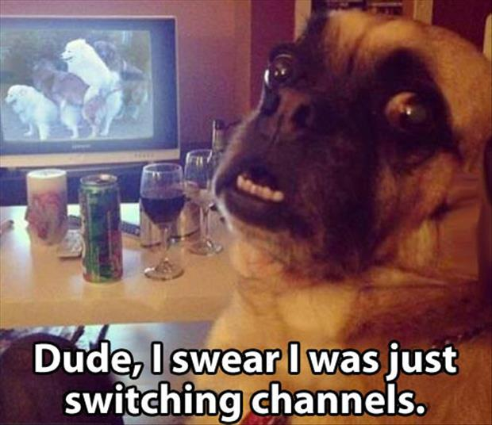
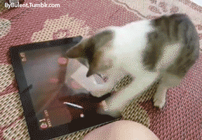

- Just a little something to show that you don't need a gif to enjoy something funny.
- Usually there are many funny pictures on the web but they don't do justice sometimes.
- That's the reason why gif's can be funnier, the motion captures the really funny part.
